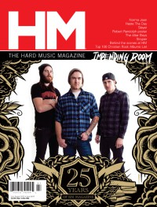

Impending Doom
|  July 2010 HM |
 November 2013 HM |
Media coverage:
- Win 2006 in Uprise Zine "Featured Bands: Impending Doom"
- Sep 2007 in HM "Faces to Watch: Impending Doom"
- Mar 2009 in HM "Impending Doom", by Seth Werkheiser
- May 2010 in HM "Poster: Impending Doom"
- Jul 2010 in HM "Impending Doom", by Tim Harris
- Mar 2012 in HM "Impending Doom", by MyChildren MyBride
- Apr 2012 in HM "Live Report: SXSW 2012, March 10-17", by Clutch
- Nov 2013 in HM "Doom Will Begin", by Justin Mabee
- Apr 2014 in HM "In Brief: In The Absence of Fear", by Robert Houston
Albums & reviews:
2007: Nailed. Dead. Risen.
- Nov 2007 in HM, by Timothy Gerst
- Apr 2008 in Heaven's Metal, by Michael J. Larson
2009: The Serpent's Servant
- May 2009 in HM, by Bear Frazer
- Oct 2009 in Heaven's Metal, by Lloyd Harp
2023: Featherbrained Wealth Motel
2024: Live From Exile
Published articles:
© 2011 CMnexus. Last updated May 2025. Contact: editor -AT- cmnexus -DØT- org